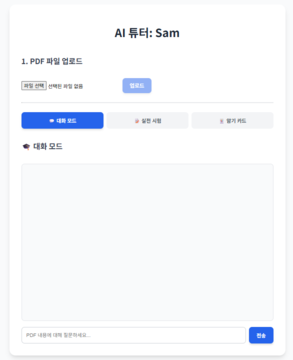
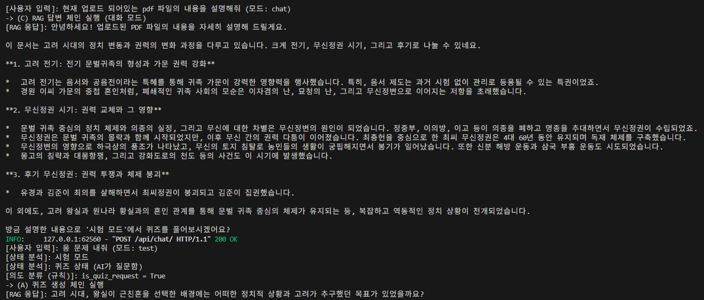
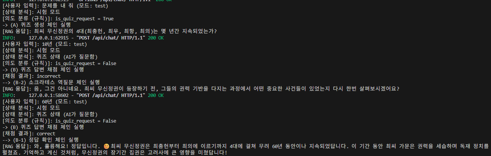

About Me
저는 일상 속 다양한 문제를 관찰하는 것에 흥미를 느끼는 개발자입니다. ChatGPT를 접하며 AI가 사람의 빈 부분을 메울 수 있다고 생각하게 되었고, 대화형 인공지능과 페르소나 챗봇에 많은 관심을 가져왔습니다.
이번 AI 튜터 프로젝트는 혼자 공부하는 사람들이 겪는 외로움이나 정보 접근의 한계를 해소하고, 여러 명이 함께 공부할 때의 시너지를 제공하기 위해 기획되었습니다. 이 프로젝트로 혼자 하는 공부와 모두와 하는 공부 간의 격차를 줄이고자 합니다.
기술 스택 (Skills)
프론트엔드
백엔드
AI & Data
Tools
프로젝트 (Projects)
나만의 AI 스승

문제 정의
학생들이 학습할 때, 때로는 혼자 하는 것보다 여럿이 모여 서로 질문하고 문제를 내주는 것이 더 효과적입니다. 하지만 성격적 이유나 환경적 요인으로 인해 그룹 스터디가 불편하거나 불가능한 사람들도 많습니다.
기존 PDF 기반 챗봇은 대부분 딱딱한 말투로 '정답'만 즉시 알려주기 때문에, 사용자가 스스로 생각하는 과정을 방해하여 능동적인 학습에 도움을 주지 못하는 문제가 있었습니다.
아키텍처 / 설계
핵심 전략으로 RAG(Retrieval-Augmented Generation) 아키텍처를 채택했습니다. 비용과 프라이버시를 위해 Ollama를 사용하여 gemma3:12b (채팅/추론)와 nomic-embed-text (임베딩)의 '듀얼 모델' 아키텍처를 설계했습니다.
초기 버전에서는 AI가 사용자의 의도(일반 질문/퀴즈 요청/퀴즈 답변)를 '추측'하도록 설계했으나, "답은 뇌물"을 "퀴즈 요청"으로 오인하는 등 '의도 분류'의 치명적인 버그와 느린 속도를 확인했습니다.
이 문제를 근본적으로 해결하기 위해, AI가 의도를 추측하는 방식 자체를 폐기했습니다. 대신, 사용자가 UI에서 "대화 모드" / "시험 모드" 버튼을 직접 선택하여 자신의 '의도(State)'를 명시적으로 시스템에 전달하는 'UI-Driven State Management' 아키텍처를 채택했습니다.
백엔드 tutor_service는 이 mode 꼬리표를 받아, '대화 모드'일 경우 (C)일반 답변 체인만 실행하고, '시험 모드'일 경우에만 (A)퀴즈 생성 / (B)채점을 처리하는 내부 라우터가 동작하도록 재설계했습니다.

핵심 기능
UI-Driven 튜터링 모드 분리 (대화/시험)
AI가 사용자의 의도를 추측하다 발생하는 모든 버그를 원천 차단하기 위해, React의 useState를 사용해 'chat'/'test' 모드를 관리하고, 이 mode 값을 모든 API 요청(ChatRequest DTO)에 포함시켰습니다. FastAPI 백엔드는 이 mode 값을 최우선으로 확인합니다.
- mode == 'chat' (대화 모드): 오직 '일반 답변 체인'(rag_chain)만 호출하여 설명과 퀴즈 제안을 수행합니다. 불필요한 채점/퀴즈 생성 로직을 건너뛰어 응답 속도를 최적화했습니다.
- mode == 'test' (시험 모드): '일반 답변 체인'을 차단하고, '시험 모드' 전용 내부 라우터(규칙 기반)가 "퀴즈 요청"인지 "퀴즈 답변"인지를 판단하여 퀴즈 생성/채점/역질문 체인을 실행합니다.

역할-특화 프롬프트 체인 (5-Chains)
'모드 분리' 아키텍처 하에서, 각자의 역할에 최적화된 5개의 전문 LangChain 체인을 프롬프트 엔지니어링으로 구현했습니다.
- 일반 답변 체인 (대화 모드): 답변 후 "'시험 모드'에서 퀴즈를 풀어보시겠어요?"라고 제안합니다.
- 퀴즈 생성 체인 (시험 모드): [!!절대 지시!!] 프롬프트를 사용해 '예시 답안'이나 '정답'을 절대 유출하지 않고 질문만 생성하도록 강제했습니다.
- 채점 체인 (시험 모드): correct / incorrect 단어만 출력하도록 template_grading을 설계하고, parse_grade 함수로 Python단에서 한 번 더 파싱하여 if grade == "correct": 로직의 안정성을 확보했습니다.
- 소크라테스 체인 (시험 모드): 채점 결과가 incorrect일 때, 정답 대신 힌트성 역질문을 생성합니다.
- 정답 체인 (시험 모드): 채점 결과가 correct일 때, 사용자를 칭찬하고 내용을 요약합니다.

나의 역할 및 기여
- Python FastAPI 및 RAG 기반 백엔드 아키텍처 전체 설계
- React 프론트엔드 UI(파일 업로드, 채팅창, 모드 버튼) 개발 및 FastAPI API 연동
- 'AI 의도 분류'의 근본적 한계(속도, 버그)를 파악하고, React의 useState와 FastAPI의 mode 인자를 연동하는 'UI-Driven State Management' 아키텍처를 도입하여 문제 해결
- '듀얼 모델' 아키텍처 설계 (채팅용 gemma3:12b, 임베딩용 nomic-embed-text)를 통해 'embeddings' 오류 해결
- '시험 모드' 내부에서 작동하는 5-Chain(답변, 퀴즈, 채점, 정답, 역질문) 프롬프트 엔지니어링 및 안정적인 파싱 로직(parse_grade) 구현
결과 및 성과
- 정적인 PDF 문서를 상호작용이 가능한 지능형 학습 교재로 성공적으로 변환.
- AI가 사용자의 의도를 '추측'하는 로직을 완전히 제거하고, UI로 '모드'를 명시적으로 받아 처리함으로써 '채점'과 '퀴즈 생성'이 섞이던 치명적인 버그를 100% 해결하고 시스템 안정성을 확보함.
- '대화 모드'에서는 불필요한 라우팅 로직을 건너뛰게 하여, 로컬 LLM 환경임에도 '일반 질문'의 응답 속도를 최적화함.
- 모든 LLM 추론과 데이터 처리를 로컬(Ollama)에서 수행하여, 완전한 데이터 프라이버시를 보장하는 AI 애플리케이션을 구현함.
회고 (Lessons Learned)
배운 점
- AI에게 사용자의 '의도'를 추측(Implicit Intent)하게 맡기는 것은 (모델 성능과 프롬프트에 상관없이) 본질적으로 불안정함을 깨달았습니다.
- 사용자가 자신의 의도를 명확히 아는 경우(대화/시험), UI(버튼)를 통해 '명시적 상태(Explicit State)'를 직접 전달받아 백엔드 로직을 분기하는 것이 가장 빠르고, 안정적이며, 견고한 설계임을 깊이 이해했습니다.
개선점
- 현재 대화 기록이 브라우저 새로고침 시 초기화됩니다. localStorage를 도입하여 대화 기록을 브라우저에 영구 저장하고 싶습니다.
- PDF 내의 표(Table)나 이미지(Image)를 인식하지 못하는 한계가 있어, 향후 멀티모달(Multi-modal) 임베딩을 도입하여 RAG의 검색 범위를 확장하고 싶습니다.